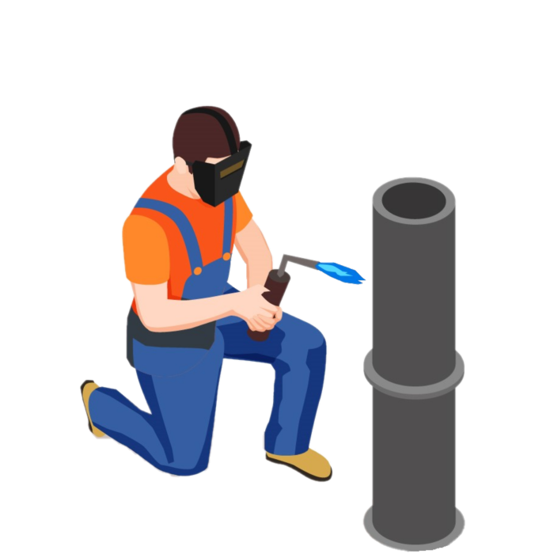
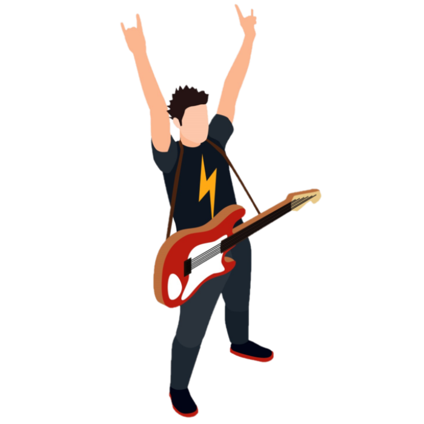

Virtuoso
ISTP
Having cool rationalism and spirited curiousity, they tend to have an individualistic mindset, pursuing goals without needing much external connection. They engage in life with inquisitiveness and personal skill, varying their approach as needed.
Adventurer
ISFP
True artists, Adventurers tend to have open minds, approaching life, new experiences, and people with grounded warmth. Their ability to stay in the moment helps them uncover exciting potentials.
Entrepreneur
ESTP
Having an impact on their immediate surroundings, Entrepreneurs tend to be energetic and action-oriented, deftly navigating whatever is in front of them. They love uncovering life’s opportunities, whether socializing with others or in more personal pursuits.

Entertainer
ESFP
Entertainers love vibrant experiences, engaging in life eagerly and taking pleasure in discovering the unknown. They can be very social, often encouraging others into shared activities.